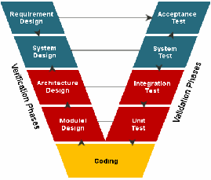
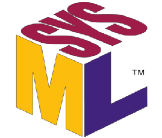
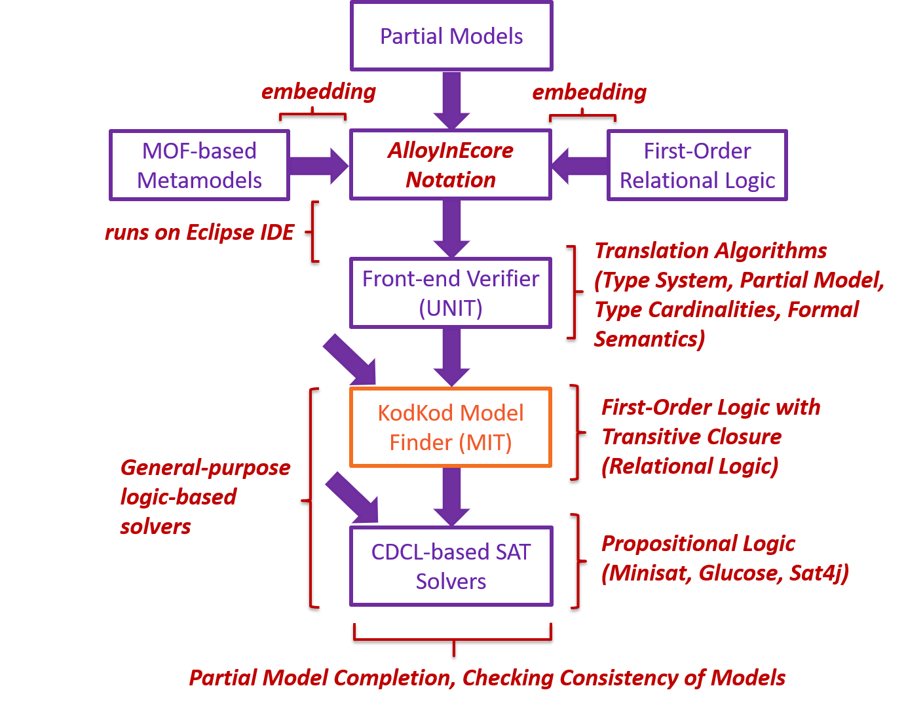

Embedding of First-Order Relational Logic into Meta-object Facility

Traceability Analysis
AlloyInEcore is being used to perform Automated Traceability Analysis in the tool-chain of Electronically Controlled Air Suspension (ECAS) functions.

Architectural Analysis
Part of the System Software Architecture including Data-Flow and Feature Diagrams is being structurally analyzed by AlloyInEcore in the ECAS System.

SysML Analysis
AlloyInEcore is currently our backend solver in MagicDraw to reason about various types of traces in the System Modeling Notation (SysML).
Introduction
We present AlloyInEcore, a tool for specifying metamodels with their static semantics to facilitate automated, formal reasoning on models. Software development projects require that software systems be specified in various models (e.g., requirements models, architecture models, test models, and source code). It is crucial to reason about those models to ensure the correct and complete system specifications. AlloyInEcore allows the user to specify metamodels with their static semantics, while, using the semantics, it automatically checks the conformance of models with their metamodel, detects inconsistent models, and completes partial models. It has been evaluated on three industrial case studies in the automotive domain.
Implementation
AlloyInEcore has been implemented as an Eclipse plug-in. We use KodKod to perform automated reasoning on models based on the metamodel semantics. AlloyInEcore translates the input metamodel and semantic specification into a first order relational formula. It also translates the input model into a Universe and Bounds in KodKod. Kodkod translates the formula and the bounds into a Boolean satisfiability (SAT) problem to invoke an off-the-shelf SAT solver. If the SAT solver finds a SAT solution to the problem, Kodkod translates that SAT solution into a solution to the formula from which AlloyInEcore derives the completed model. AlloyInEcore is approximately 31K lines of Java code, excluding comments and third-party libraries.
Tool-Chain

Publications
- Ferhat Erata, Arda Goknil, Ivan Kurtev, and Bedir Tekinerdogan. 2018. AlloyInEcore: Embedding of First-Order Relational Logic into Meta-Object Facility for Automated Model Reasoning. In Proceedings of the 26th ACM Joint European Software Engineering Conference and Symposium on the Foundations of Software Engineering (ESEC/FSE'18), November 4–9, 2018, Lake Buena Vista, FL, USA.. ACM, New York, NY, USA, https://doi.org/10.1145/3236024.3264588